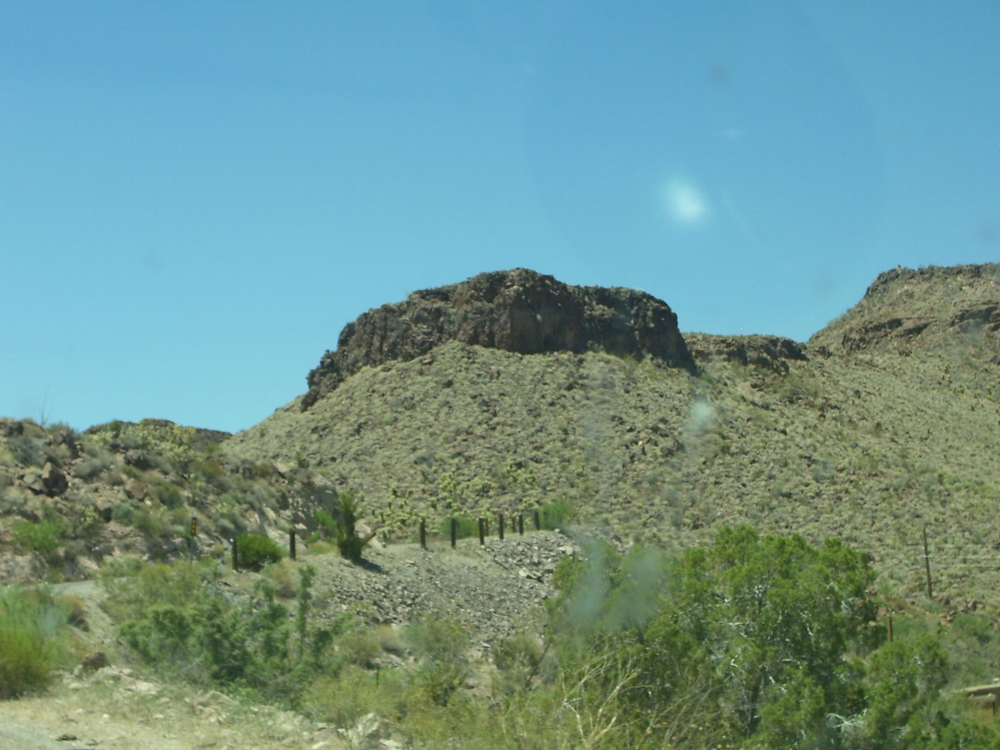
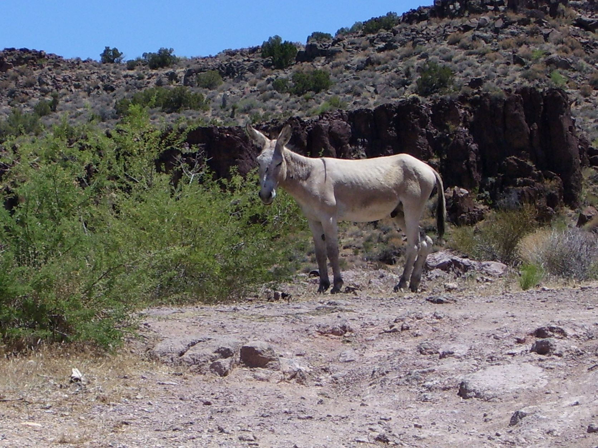
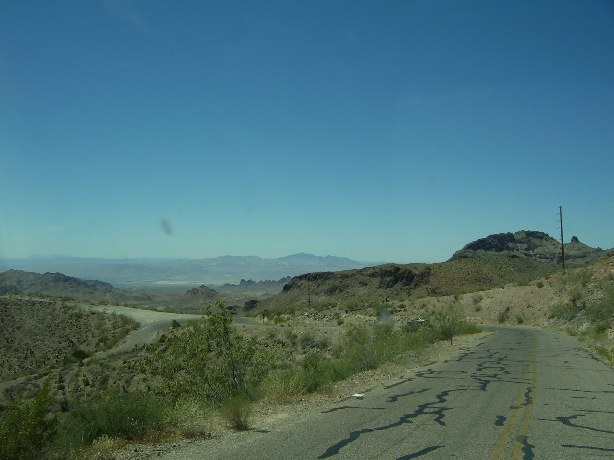
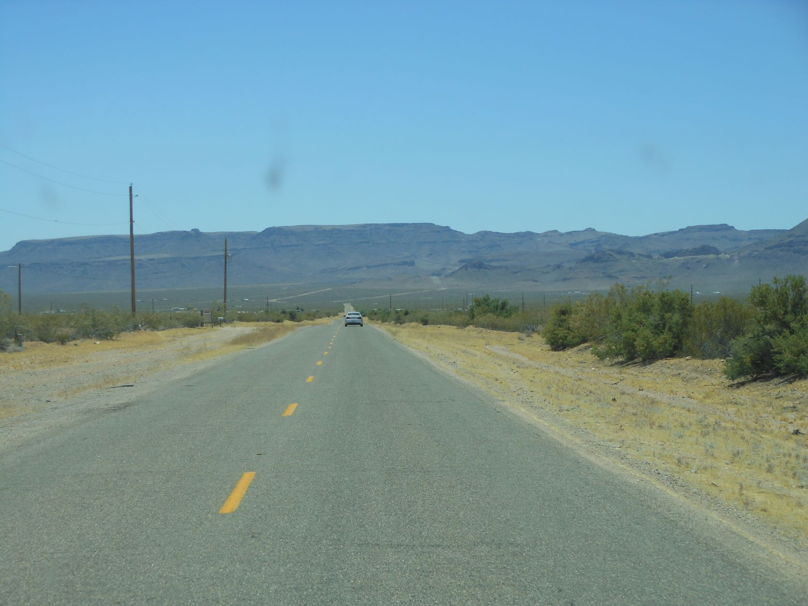
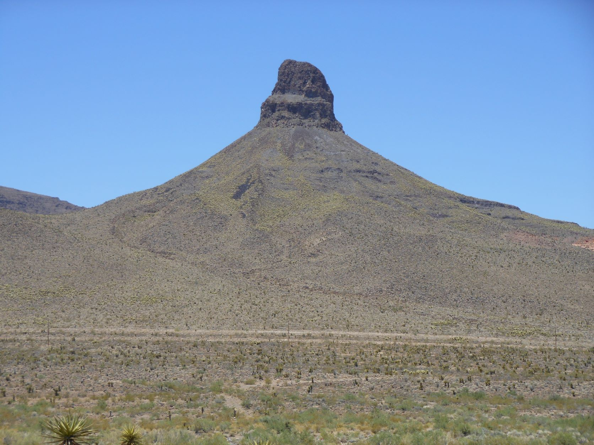
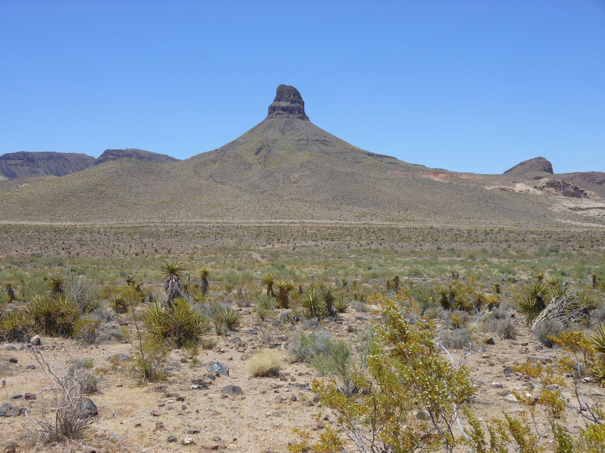
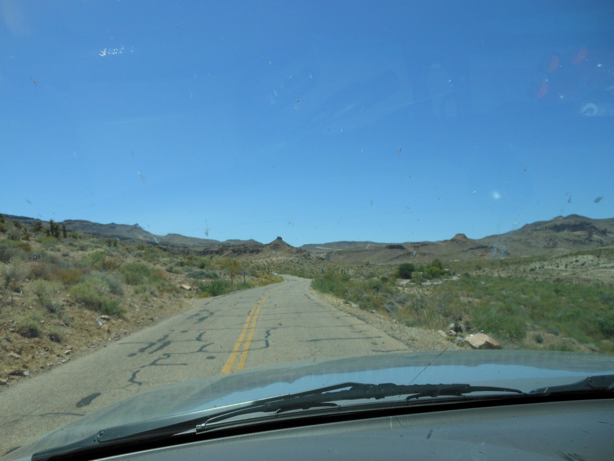
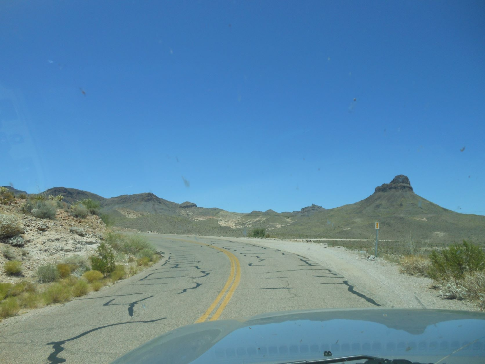
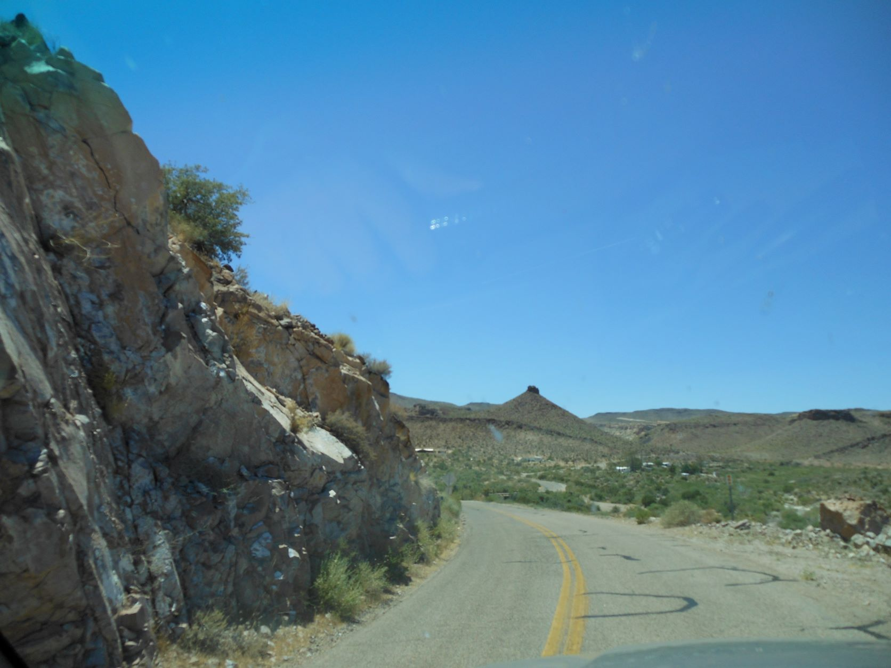

June 15, 2012 - Road to Oatman, AZ

Mountain road - Road to Oatman, AZ

Donkey on the hillside - Road to Oatman, AZ

Mountain road - Road to Oatman, AZ

Desert highway to the desert mountains - Road to Oatman, AZ

Volcano chimney - Road to Oatman, AZ

Volcano chimney - Road to Oatman, AZ

Mountain road - Road to Oatman, AZ

Mountain road - Road to Oatman, AZ

Narrow mountain road - Road to Oatman, AZ